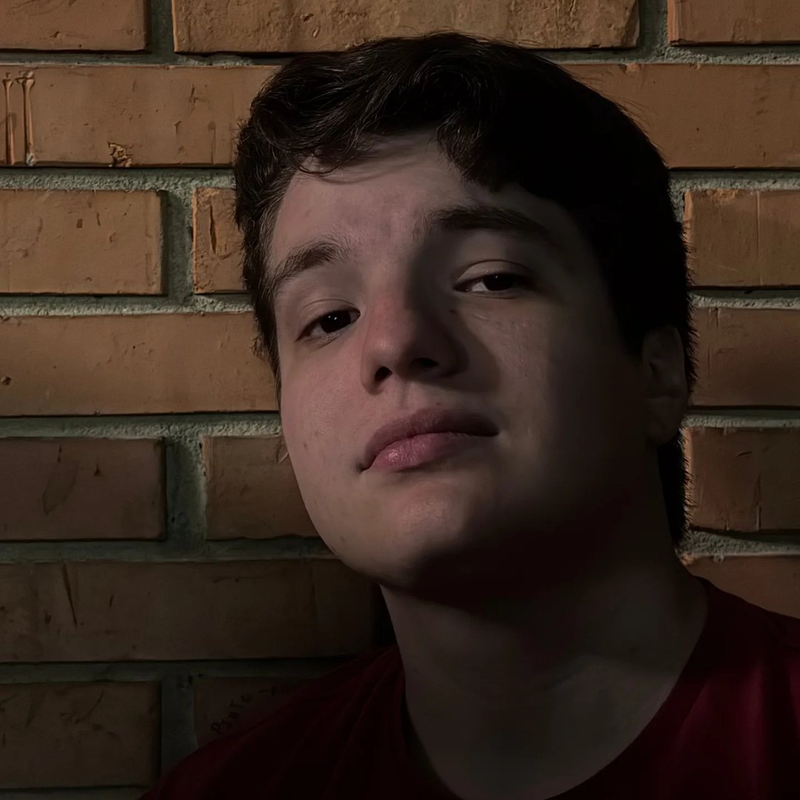
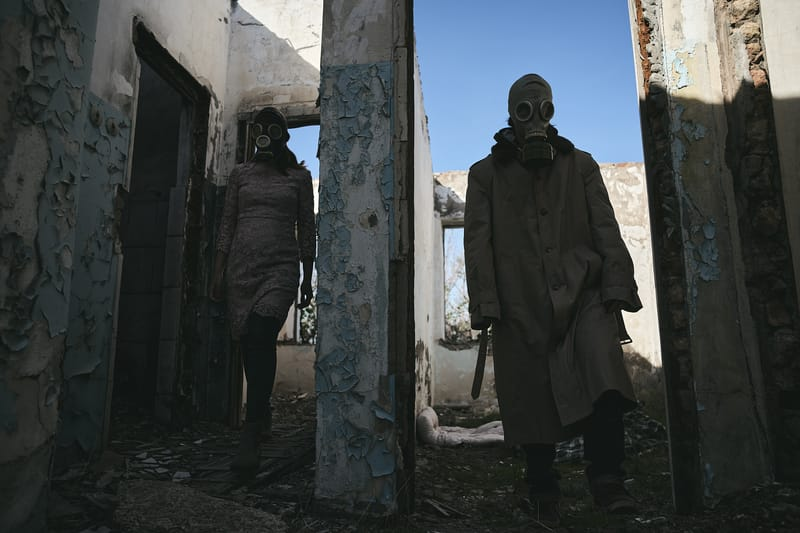
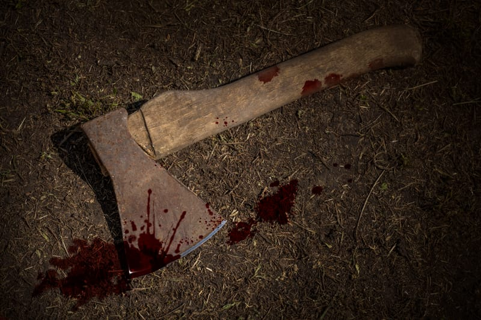
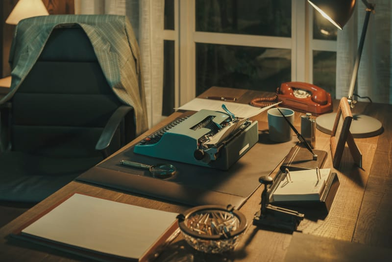

Interativo
Roteiro para Games
Criação de estruturas narrativas ramificadas, design interativo de diálogos e construção de universos imersivos onde o jogador está no centro.
Solicitar OrçamentoRoteirista Audiovisual & Games
Especialista em criar narrativas imersivas, estruturas ramificadas para games e roteiros dinâmicos para séries e filmes de ação, terror e suspense.

Sobre mim
Sou Roteirista Audiovisual formado pela Univali e especialista em narrativa para diferentes mídias, com formação em roteiro para games, séries e filmes pela EBAC. Minha grande paixão e especialidade são as histórias que prendem o espectador do início ao fim, transitando com fluidez entre ação, aventura, terror, true crime e suspense.
Além do audiovisual tradicional, possuo alta experiência no desenvolvimento de scripts para games, criando estruturas interativas, ramificadas e imersivas que colocam o jogador no centro da trama.
Especialidades
Desenvolvimento de roteiros estruturados para diferentes mídias, com foco em manter o jogador ou espectador imerso e engajado do início ao fim.
Interativo
Criação de estruturas narrativas ramificadas, design interativo de diálogos e construção de universos imersivos onde o jogador está no centro.
Solicitar OrçamentoLinear
Desenvolvimento de scripts para séries, filmes e curtas, dominando o ritmo e os ganchos essenciais para gêneros de ação, terror e suspense.
Solicitar OrçamentoAnálise
Leitura crítica, script doctoring e polimento de roteiros. Identificando furos, ajustando o ritmo e elevando o impacto emocional da história.
Solicitar OrçamentoPitch Decks & Bíblias Visuais
Antes de lerem a primeira cena, é preciso visualizar a história. Explore as premissas, universos e atmosferas dos meus principais projetos em desenvolvimento.
INT. SALA DE INTERROGATÓRIO — NOITE
01 Curta-metragem
Os detetives Almeida e Soares conduzem um tenso interrogatório, tentando fazer um serial killer confessar onde escondeu os últimos corpos antes que seja tarde demais.

EXT. LITORAL DESTRUÍDO — DIA
02 Game
Em um Brasil pós-apocalíptico e árido, Alice, ex-membro de uma milícia brutal, luta para proteger o pouco de humanidade que lhe resta após a queda da sociedade.

INT. CABANA REMOTA — NOITE DE TEMPESTADE
03 Terror
Uma família isolada em uma cabana remota precisa sobreviver à própria figura paterna, que perde a sanidade e se torna um monstro letal ao ser corrompido por um machado amaldiçoado.
Diferenciais Técnicos

Alta proficiência em Final Draft, Celtx, Fade In, WriterDuet e Arc Studio Pro, garantindo formatação padrão da indústria.
Roteiros desenhados para prender a atenção. Cada diálogo e cena possuem uma função clara no avanço da trama.
Transito com facilidade entre ação dinâmica, true crime realista, aventuras grandiosas e terror atmosférico.
Experiência em trabalhar junto ao design de jogo e direção, assegurando que a visão criativa seja viável e impactante.
Contato
Me conte um pouco sobre o seu projeto. Estou disponível para desenvolvimento de roteiros de games, produções audiovisuais ou para consultoria narrativa.
Disponível para projetos
+55 43 99909-9026 pedrohenriquejpzamps@gmail.com